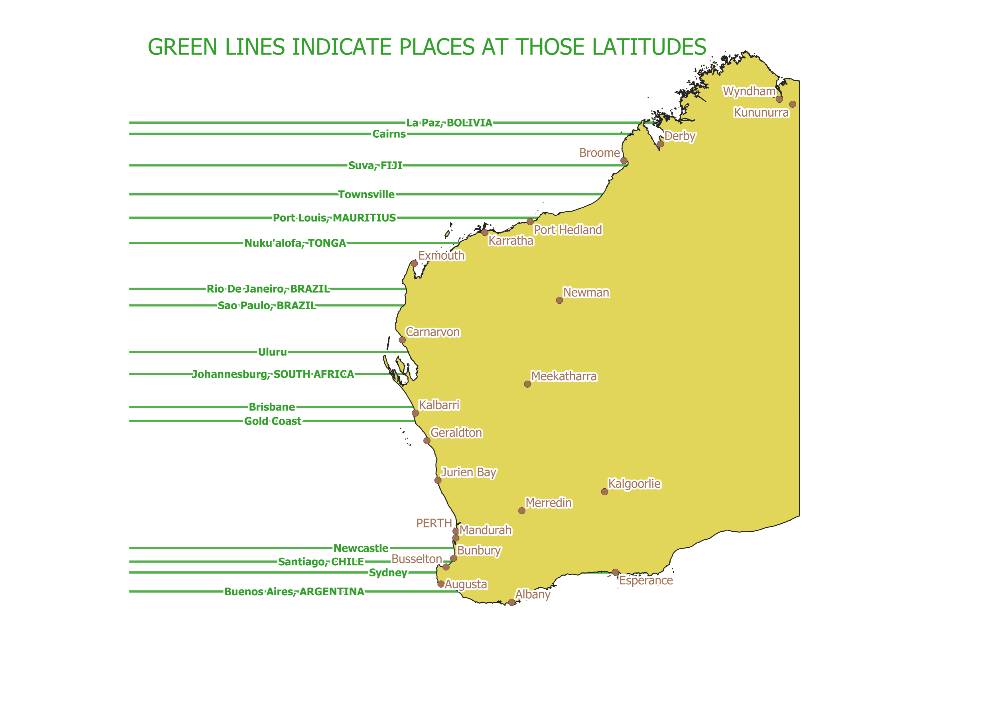
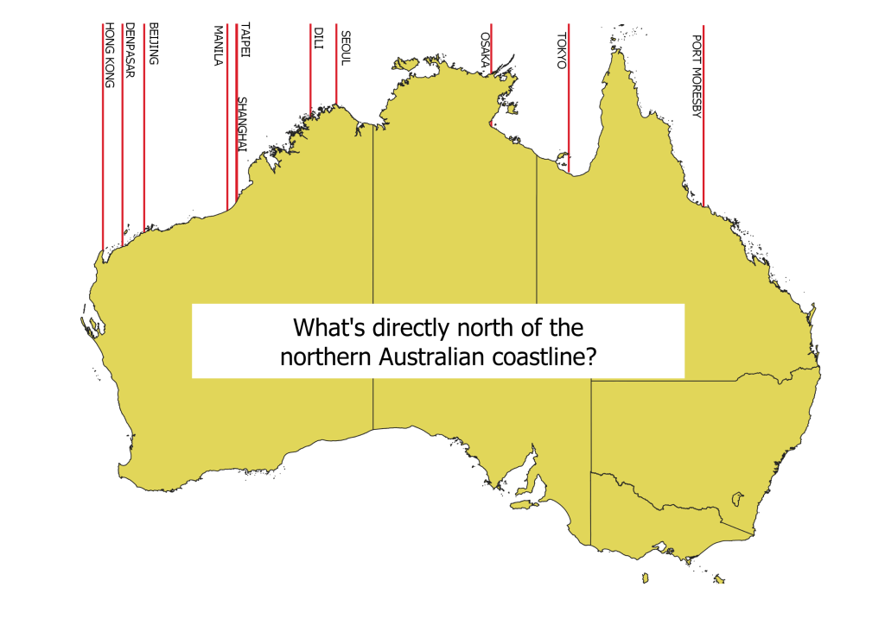

I completed a map using QGIS and Python programming which maps the latitude lines that certain major places in the Southern Hemisphere are located and shown them relative to positions on the Western Australian coastline.

This is a similar map to the one I did for cities at certain longitudes directly to the WA coast. For this one I used QGIS to manually add the labels in the map layout as the automatic labelling wasn't very good.
Note that the longitudes of Shanghai and Taipei are very similar. Shanghai is just slightly to the west of Taipei hence the positioning of the label for Shanghai reflects that.
As the labels are manually added the presentation isn't my best work.
I used the mobile app SW Maps to map the cities and create lines from them to the Australian coast. I exported the drawn features in a geojsons file and edited the geojson before working with it in QGIS to remove any imperfections.
